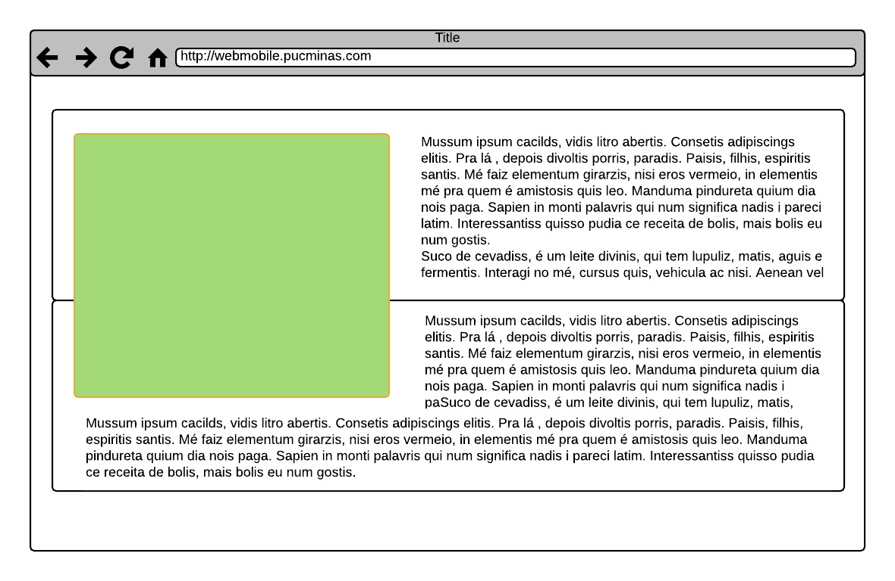
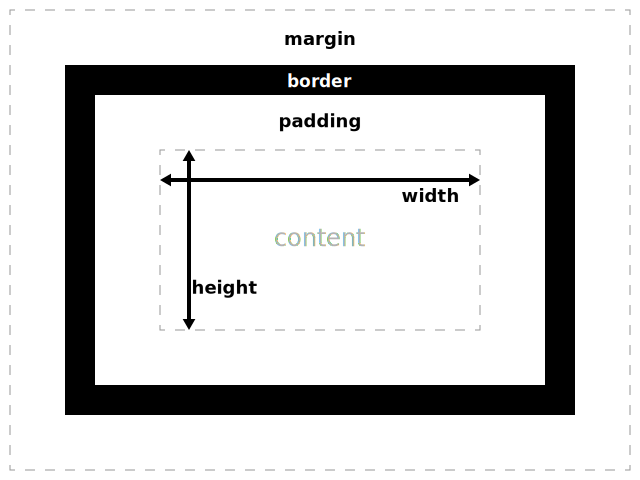
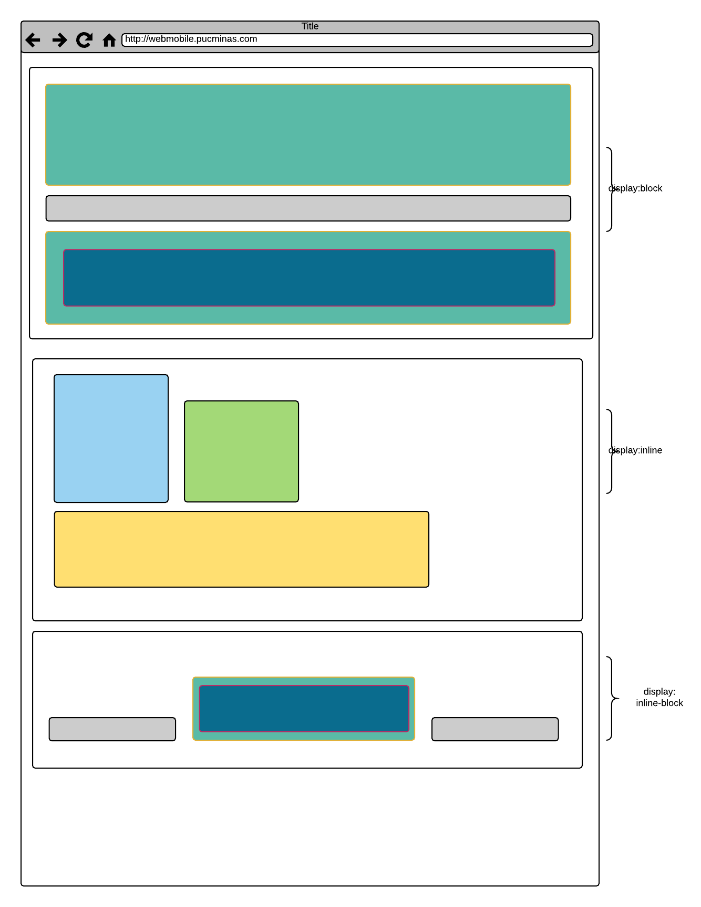

CSS
Introdução
CSS é uma linguagem de Folha de Estilo usada para descrever a apresentação de um documento HTML.
Links de Referência
W3C - Adicionando CSS
-
<html lang="en"> <head> <meta charset="utf-8"> <meta name="description" content="Exemplos - Formas de Carregar - css"> <-- Via recurso externo ao documento, de um arquivo css --> <link rel="stylesheet" type="text/css" href="main.css"> <title>Exemplos - Formas de Carregar - css</title> <-- embutido no documento --> <style> h1 { color: #ff0000; } </style> </head> <body> <h1>Exemplos - Formas de Carregar - css</h1> <-- Inline, no elemento HTML --> <h2 style="color: #00ff00">CSS</h2> <h3>Adicionando CSS</h3> </body> </html>
W3C - Conceitos Básicos
Cascade, Herança e Especificidade
- Prioridades
- Link Externo.
- No elemento
<head/> - Atributo inline
- !important
- Prioridade por ordem de declaração documento é considerada
- Propriedades não conflitantes são combinadas
- Herança
- Elementos aninhados herdam estilos do pai; Seletores podem ser aninhados para sobrescrever propriedades do pai.
-
Especificidade
- Elemento
- Classe
- ID
- Inline
Selector Thousands Hundreds Tens Ones Total specificity h10 0 0 1 0001 #important0 1 0 0 0100 h1 + p::first-letter0 0 0 3 0003 li > a[href=*"en-US"] > .inline-warning0 0 2 2 0022 #important div > div > a:hover, inside a<style>element1 1 1 3 1113
- Prioridades
Floating
Remove elementos do fluxo, flow do documento e move para um canto, edge específico; Outro conteúdo, texto ou inline dentro do elemento pai se posicionará em volta do float
div { float: left; float: right; float: none; /* Global values */ float: inherit; float: initial; float: unset; }Float - Clearing
Quando items float são maiores que conteúdos não float
- Manualmente
- ou clearfix
Posição
-
Box Model
 -
DRY - Don't Repeat Yourself
- Aplicar conteúdo a elemento pai ao invés de repetir em filhos
- Combinação de seletores com vírgulas
- Abstração de seletores - ex: adicionar classes
- Shorthand
body { font: 12px; } div { color: #ccc; } .posts { width: 50px; height: 50px; } font: 16px/18px bold italic sans-serif; margin: 10px 15px 5px 20px; -
display
display: none / block / inline / inline-block
 -
centralizando
- margin: 0 auto;
- text-align: center;
-
reset CSS
-
Uso de Images
- Conteúdo - Imagens Inline
- Layout - Background Images
-
Crop de Imagens
- CSS Tricks Crop
- setar overflow: hidden, height and width no wrap; setar height: auto e width similar ao parent no child
- mude o tamanho das suas imagens para quadrados
- mude o tamanho no lado do servidor
- no CMS indique instruções para upload
<h4>Férias</> <ul> <li class="crop" > <img src="farm.jpg" /> </> .crop { overflow: hidden; height: 400px; width: 500px; } .crop img { height: 400px; width: auto; } -
Sprites